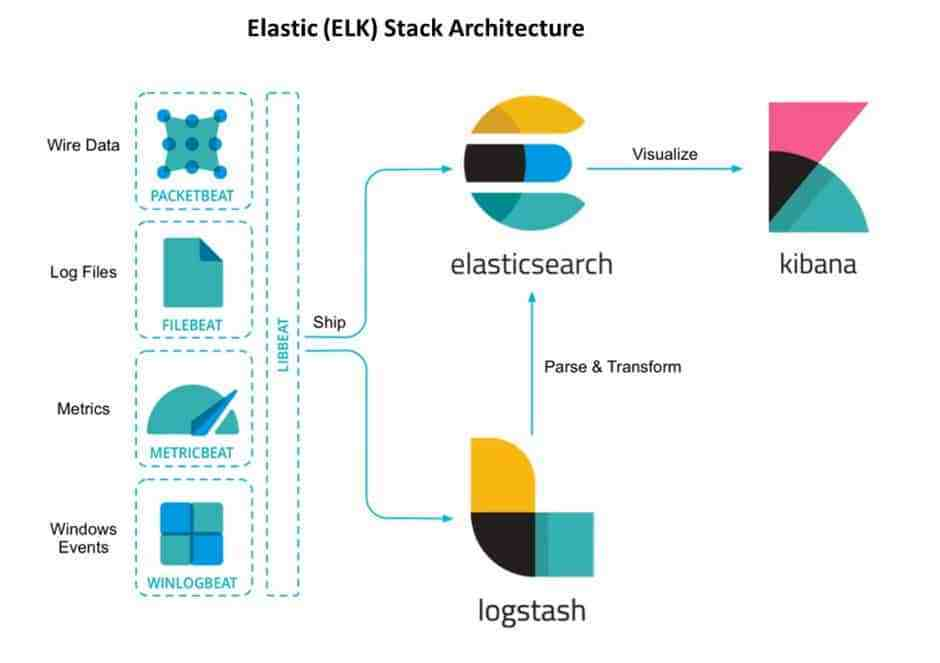
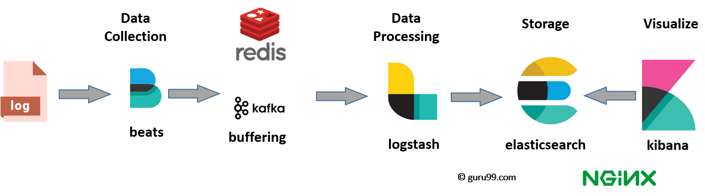

by TL
*Up to date for version 6
What's what in Elastic stack
What is the basic workflow
The engine of the stack
First method of ingest
Lightweight method of ingest
Data visualizer
How data flows through Elastic
Why json is the "best" way for Elastic
How indexing works
How it's used
Basic architecture
Ideal flow
Main component of Elastic Stack, takes care of storing documents in shards, replication and multiple others
Has multiple roles, all configurable
RESTful
Does weird analytics
Resource hog
Main robust data processor
Done before arriving at elasticsearch.
Written in Java.
Kinda slow.
Resource hog.
Configured in two parts:
Example pipeline
input {
rabbitmq {
user => "rabbitmq"
host => "rabbitmq"
queue => "log"
exchange => "log"
durable => true
}
}
output {
elasticsearch {
hosts => ["elasticsearch"]
}
}Advanced pipeline
input {
stdin {}
}
filter {
json {
source => "message"
}
mutate {
replace => { "[test][a]" => "%{s}"}
add_field => {"[test][myNewField]" => "%{s}"}
add_field => {"some" => "%{[test][a]}"}
}
}
output {
stdout { codec => rubydebug }
}Lightweight daemon
Written in go
Reads local files and output parsed content
#yaml
filebeat.prospectors:
- type: log
paths:
- "/var/log/apache2/*"
fields:
apache: true
output.elasticsearch:
hosts: ["localhost:9200"]
Full blown data discovery and visualization toolbox
Pretty interface
Pretty slow
More advanced functions need to be scripted in Painless
JSON is the native storage data format for elasticsearch
It's easy to query via kibana
It's easy to store, compresses well
All of the above only applies to relatively flat json structures
Is done on a single node
When done it's replicated across cluster
For most cases blazingly fast
Simple example
GET /bank/_search
{
"query": { "match_all": {} },
"size": 1
}
Advanced example
POST /bookdb_index/book/_search
{
"query": {
"bool": {
"must": {
"bool" : {
"should": [
{ "match": { "title": "Elasticsearch" }},
{ "match": { "title": "Solr" }}
],
"must": {
"match": {
"authors": "clinton gormely"
}
}
}
},
"must_not": {
"match": {
"authors": "radu gheorge"
}
}
}
}
}Fuzzy query
POST /bookdb_index/book/_search
{
"query": {
"multi_match" : {
"query" : "comprihensiv guide",
"fields": ["title", "summary"],
"fuzziness": "AUTO"
}
},
"_source": ["title", "summary", "publish_date"],
"size": 1
}